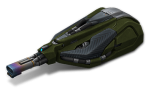

概括
火焰炮通过和接触时产生的灼伤造成伤害，即使在武器停止射击后也能使对手生病。
火焰炮和冰风暴一样，可以同时对附近的几辆坦克造成伤害。
对于新手玩家来说，火焰炮的主要优势在于瞄准不是必需的。所需要的只是将火流指向敌人的大致方向。
车库中的描述
近战炮塔。使敌人着火，随着时间的推移造成额外伤害。
燃料容量有限，随时间恢复。
在狭窄的城市街道上，当战斗看起来更像是一个蚂蚁农场时，没有比火焰炮更好的武器了。
适用于没有机动空间的有限区域的理想炮塔。
同样出色的是将缓慢的重型坦克着火并炸毁快速的轻型底盘。
通过小心地将燃料分散到多个目标上，您可以烧毁整个坦克工厂。
即使是少量的燃料也足以点燃一个粗心的敌人，
所以你可以寻找一个新的目标，燃烧的敌人会自己炸毁。
当然，除非它的队友用冰风暴灭火。
装备改造
防御模块
射击效果
皮肤

火焰炮标准
火焰炮 XT
旧的火焰炮恶魔
火焰炮恶魔